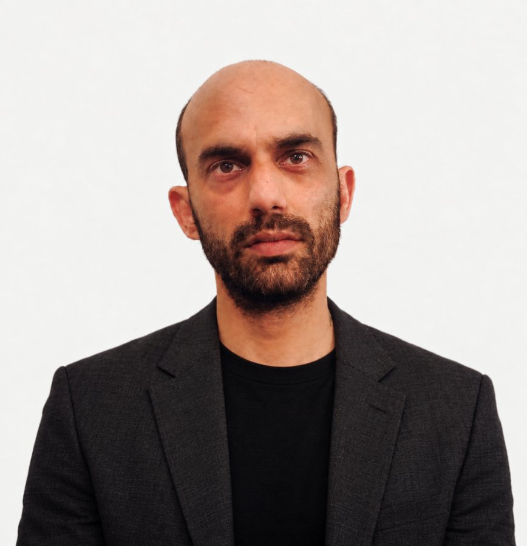

Oded Farber
A director and editor specializing in storytelling, cinematic language, and complex editing and post-production. An editor for more than 20 years, with work broadcast across Israel’s major channels and awarded internationally. He co-wrote, co-directed and co-edited the AI-animated documentary Water Tower Murder (Kan 11, 2024).